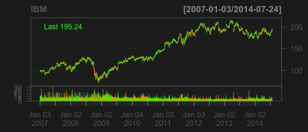

- Create a Shiny app to:
Rob Schick, PhD
MASTS Research Fellow, University of St Andrews
quantmod librarylibrary(quantmod)
getSymbols('IBM')
## [1] "IBM"
chartSeries(IBM)

Here is a static pic of my app
Note the change in the stock, date and in the percent change as compared to previous slide